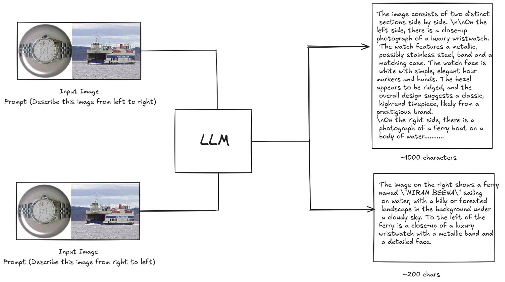

Investigating Spatial Attention Bias in Vision-Language Models
Vision-Language Models have demonstrated remarkable capabilities in understanding visual content, yet systematic biases in their spatial processing remain largely unexplored. This work identifies and characterizes a systematic spatial attention bias where VLMs consistently prioritize describing left-positioned content before right-positioned content in horizontally concatenated images. Through controlled experiments on image pairs using both open-source and closed-source models, we demonstrate that this bias persists across different architectures, with models describing left-positioned content first in approximately 97% of cases under neutral prompting conditions. Testing on an Arabic-finetuned model reveals that the bias persists despite right-to-left language training, ruling out language reading direction as the primary cause. Investigation of training dataset annotation guidelines from PixMo and Visual Genome reveals no explicit left-first ordering instructions, suggesting the bias is consistent with architectural factors rather than explicit training data instructions. These findings reveal fundamental limitations in how current VLMs process spatial information.
Vision-Language Models (VLMs) have achieved significant advances in multimodal understanding by jointly modeling visual and textual modalities, enabling applications such as image captioning, visual question answering, and multimodal reasoning Krishna and others (2017); Lu et al. (2019); Li et al. (2020); Radford and others (2021). Large-scale pretrained VLMs now serve as general-purpose multimodal systems and exhibit strong zero-shot and in-context learning capabilities Alayrac et al. (2022); Li et al. (2023a).
视觉语言模型（VLM）通过联合建模视觉与文本模态，在多模态理解上取得了显著进展，支撑了图像描述、视觉问答与多模态推理等应用 Krishna 等（2017）；Lu 等（2019）；Li 等（2020）；Radford 等（2021）。大规模预训练 VLM 如今已成为通用多模态系统，并展现出强大的零样本与上下文学习能力 Alayrac 等（2022）；Li 等（2023a）。
Despite these achievements, systematic biases in how VLMs process spatial information remain poorly understood Zhu et al. (2025). Such biases can compromise model reliability in real-world applications, particularly those requiring fair and balanced visual interpretation, including user interfaces, robotics, and decision-support systems.
尽管取得了这些成就，VLM 处理空间信息时的系统性偏置仍未得到充分理解 Zhu 等（2025）。这类偏置会损害模型在真实应用中的可靠性，尤其是那些要求公平、均衡地解读视觉内容的场景，包括用户界面、机器人与决策支持系统。
This work investigates a specific manifestation of spatial processing bias: when presented with horizontally concatenated images containing two distinct objects, do VLMs exhibit systematic preferences in the order they describe spatial content? We focus on two fundamental questions. First, do VLMs demonstrate consistent spatial attention bias across different architectures and model generations? Second, what factors contribute to this bias. Does it stem from language reading direction, training data annotation patterns, or architectural design choices?
本文考察空间处理偏置的一种具体表现：当输入是包含两个不同物体的水平拼接图像时，VLM 在描述空间内容的顺序上是否表现出系统性偏好？我们聚焦两个基本问题。第一，VLM 在不同架构与不同代际的模型上是否表现出一致的空间注意力偏置？第二，哪些因素造成了这种偏置——它源于语言的阅读方向、训练数据的标注模式，还是架构设计选择？
We conduct experiments using a controlled dataset of 100 image pairs from Caltech-101 Fei-Fei et al. (2004), where 50 unique pairs are presented alongside their horizontal flips to isolate positional effects from content-specific biases. We evaluate seven models spanning both open-source architectures including InternVL2-8B and InternVL3-8B Chen et al. (2024); OpenGVLab (2025a); OpenGVLab (2025b), Qwen2-VL-7B Qwen Team (2024); Qwen Team (2025), and Qwen2.5-VL-7B Bai and others (2025) and closed-source systems, including GPT-5 Nano OpenAI (2025), Gemini 2.0 Flash Google (2025), and Claude 4.5 Haiku Anthropic (2025). Each model is tested with both simple directional prompts and structured JSON-format prompts to assess natural behavior and responsiveness to explicit instructions.The key contributions of this work are as follows:
我们使用一个受控数据集开展实验，该数据集包含来自 Caltech-101 的 100 个图像对 Fei-Fei 等（2004）：其中 50 个独特图像对与其水平翻转版本一并呈现，以把位置效应与内容特有的偏置分离开。我们评测了七个模型，涵盖开源架构——包括 InternVL2-8B 与 InternVL3-8B Chen 等（2024）；OpenGVLab（2025a）；OpenGVLab（2025b）、Qwen2-VL-7B Qwen Team（2024）；Qwen Team（2025）以及 Qwen2.5-VL-7B Bai 等（2025）——以及闭源系统，包括 GPT-5 Nano OpenAI（2025）、Gemini 2.0 Flash Google（2025）与 Claude 4.5 Haiku Anthropic（2025）。每个模型都用简单的方向性提示与结构化 JSON 格式提示进行测试，以评估其自然行为以及对明确指令的响应程度。本文的主要贡献如下：
We provide a systematic characterization of spatial attention bias across seven diverse VLM architectures, identifying a consistent left-to-right processing preference in open-source models.
• 我们在七种多样的 VLM 架构上对空间注意力偏置做了系统性刻画，识别出开源模型中一致的从左到右处理偏好。
We demonstrate through Arabic-finetuned model testing MBZUAI Oryx-Lab (2025) that this bias persists regardless of language reading direction (right-to-left), ruling out language priors as the primary cause.
• 我们通过对阿拉伯语微调模型的测试 MBZUAI Oryx-Lab（2025）证明，无论语言阅读方向如何（从右到左），这种偏置依然存在，从而排除了语言先验作为主要原因的可能。
We analyze annotation guidelines from PixMo Deitke and others (2024) and Visual Genome Krishna and others (2017), showing that explicit left-first ordering instructions are absent from major training datasets.
• 我们分析了 PixMo Deitke 等（2024）与 Visual Genome Krishna 等（2017）的标注指南，表明主流训练数据集中并不存在明确的「先左」排序指令。
We evaluate bias on a Desktop UI dataset consisting of dense interface elements, highlighting how spatial preferences shift in information-rich contexts.
• 我们在一个由密集界面元素构成的 Desktop UI 数据集上评估了偏置，凸显空间偏好在信息丰富的语境中如何发生偏移。

图 1：检测空间注意力偏置的实验设置总览。
Vision-Language Models (VLMs) typically feature a modular architecture comprising a frozen visual encoder Radford et al. (2021); Zhai et al. (2023), a large language model backbone Touvron et al. (2023); Chiang et al. (2023), and a cross-modal alignment projector Alayrac et al. (2022); Li et al. (2023a); Liu et al. (2024) that bridges the semantic gap between modalities. These systems are initially grounded on massive image-text corpora Schuhmann et al. (2022) and subsequently refined through visual instruction tuning Dai et al. (2024) or direct preference optimization Zhao et al. (2023); Yu et al. (2023) to enhance instruction adherence. This paradigm has yielded remarkable proficiency across diverse applications, including open-ended dialogue Bai et al. (2023); Chen et al. (2024), complex visual reasoning Wang et al. (2023b); Zhu et al. (2023), and domain-specific tasks such as biomedical analysis Li et al. (2024). However, despite these advancements, recent research suggests that mapping high-dimensional visual features into the causal attention mechanisms of LLMs introduces structural vulnerabilities, particularly regarding how spatial information is encoded, preserved, and prioritized during cross-modal interactions.
视觉语言模型（VLM）通常采用模块化架构，包含一个冻结的视觉编码器 Radford 等（2021）；Zhai 等（2023）、一个大语言模型主干 Touvron 等（2023）；Chiang 等（2023），以及一个弥合模态间语义鸿沟的跨模态对齐投影器 Alayrac 等（2022）；Li 等（2023a）；Liu 等（2024）。这些系统先在大规模图文语料上打基础 Schuhmann 等（2022），随后通过视觉指令微调 Dai 等（2024）或直接偏好优化 Zhao 等（2023）；Yu 等（2023）加以精炼，以提升指令遵循能力。这一范式在开放域对话 Bai 等（2023）；Chen 等（2024）、复杂视觉推理 Wang 等（2023b）；Zhu 等（2023）以及生物医学分析等领域专属任务 Li 等（2024）等多种应用中都取得了出色表现。然而，尽管取得了上述进展，近期研究表明，把高维视觉特征映射进 LLM 的因果注意力机制会引入结构性脆弱，尤其是在跨模态交互过程中空间信息如何被编码、保留与优先处理这一问题上。
Recent work has identified various biases in VLMs. Gender bias in image captioning has been extensively documented, with models often making stereotypical associations based on statistical correlations in training data Hendricks et al. (2018); Zhao et al. (2021). Object co-occurrence biases are also prevalent, causing models to hallucinate commonly associated objects even when the object is absent from the image Rohrbach et al. (2018); Li et al. (2023b). While these semantic biases have been widely studied, systematic biases in spatial processing remain comparatively underexplored.
近期工作已识别出 VLM 中的各类偏置。图像描述中的性别偏置被大量记录：模型常基于训练数据中的统计相关做出刻板关联 Hendricks 等（2018）；Zhao 等（2021）。物体共现偏置同样普遍，它使模型即便在目标物体并未出现在图像中时也会幻觉出常与之关联的物体 Rohrbach 等（2018）；Li 等（2023b）。尽管这类语义偏置已被广泛研究，空间处理中的系统性偏置相比之下仍未被充分探索。
Recent investigations have begun to explore the spatial robustness of LVLMs, though the focus has largely remained on reasoning accuracy rather than scanning priority. Notably, Zhu et al. (2025) conducted a systematic study demonstrating that current LVLMs often produce inconsistent semantic outputs when identical visual content is shifted to different spatial locations. More recently, Tian et al. (2025) investigated position bias in multi-image contexts, identifying a "recency bias" in open-source models (preferring the last image) and a "lost-in-the-middle" phenomenon in proprietary models when performing specific reasoning tasks.
近期的考察开始关注大视觉语言模型（LVLM）的空间鲁棒性，但焦点主要停留在推理准确率上，而非扫描优先级。其中，Zhu 等（2025）开展了一项系统研究，表明当前的 LVLM 在相同的视觉内容被移到不同空间位置时，往往产生不一致的语义输出。更近期地，Tian 等（2025）考察了多图像语境中的位置偏置，在开源模型中识别出一种「近因偏置」（偏好最后一张图像），并在专有模型执行特定推理任务时发现了「中部丢失」现象。
While these studies highlight vulnerabilities in performance stability (specifically whether a model answers correctly depending on image placement), they do not address the distinct phenomenon of sequential attention bias, or the intrinsic preference to describe specific spatial regions first. Furthermore, existing literature has not sufficiently isolated visual scanning biases from linguistic reading directionality, nor evaluated how these spatial priors manifest in information-dense environments like user interfaces. Our work addresses these gaps by decoupling text generation order from visual processing and examining how entrenched spatial habits can lead to instruction-following failures in state-of-the-art models.
这些研究揭示了性能稳定性上的脆弱（具体地说，即模型是否因图像摆放位置而答对），但它们并未涉及另一类截然不同的现象——顺序注意力偏置，也就是优先描述特定空间区域的内在偏好。此外，现有文献也没有充分把视觉扫描偏置与语言阅读方向性分离开来，更没有评估这些空间先验在用户界面等信息密集环境中如何显现。我们的工作通过把文本生成顺序与视觉处理解耦，并考察根深蒂固的空间习惯如何导致前沿模型出现指令遵循失败，来填补这些空白。
To evaluate spatial bias across different levels of visual complexity and information density, we constructed two distinct datasets: one focusing on object-centric natural images and another on dense, text-rich user interfaces.
为在不同视觉复杂度与信息密度层级上评估空间偏置，我们构建了两个不同的数据集：一个聚焦以物体为中心的自然图像，另一个聚焦密集、富文本的界面。
We constructed a controlled dataset to isolate positional bias from content-specific effects. From Caltech-101 Fei-Fei et al. (2004), we selected 50 diverse image pairs from different object categories. For each pair, we created the original left-right arrangement and a horizontally flipped version, yielding 100 total test images. This design ensures that observed bias cannot be attributed to specific image content being inherently more description-worthy. All images were resized to 512×512 pixels using bicubic interpolation before horizontal concatenation.
我们构建了一个受控数据集，以把位置偏置与内容特有的效应分离开。我们从 Caltech-101 Fei-Fei 等（2004）中选出 50 个来自不同物体类别的多样图像对。对每个图像对，我们生成原始的左右排布以及一个水平翻转版本，共得到 100 张测试图像。这一设计保证了观测到的偏置不能归因于某类图像内容本身更值得描述。所有图像在水平拼接前都用双三次插值缩放至 512×512 像素。
To investigate model behavior in high-density information contexts, we curated a "Desktop UI" dataset comprising 10 distinct screenshots of common digital interfaces (e.g., LinkedIn feed, Google News, Twitter/X feed, YouTube homepage, Gmail inbox, and LeetCode). From these 10 base screenshots, we generated all unordered pairwise combinations (10C2 = 45 unique pairs), and horizontally concatenated each pair to form the evaluation set. This design allows us to systematically evaluate spatial bias across diverse UI layouts while controlling for the underlying content. Unlike the object-centric Caltech dataset, these images contain dense textual information and complex UI elements, testing whether spatial scanning habits shift when models are presented with reading-heavy tasks.
为考察模型在高密度信息语境下的行为，我们整理了一个「Desktop UI」数据集，包含 10 张常见数字界面的不同截图（如 LinkedIn 信息流、Google News、Twitter/X 信息流、YouTube 首页、Gmail 收件箱与 LeetCode）。基于这 10 张基础截图，我们生成了全部无序两两组合（10C2 = 45 个独特图像对），并把每一对水平拼接，构成评测集。这一设计使我们能够在控制底层内容的同时，系统评估不同 UI 布局下的空间偏置。与以物体为中心的 Caltech 数据集不同，这些图像包含密集的文本信息与复杂的 UI 元素，用以检验当模型面对阅读量大的任务时，其空间扫描习惯是否会发生偏移。
We conducted three sets of experiments to investigate different aspects of spatial bias.
我们开展了三组实验，考察空间偏置的不同方面。
To establish baseline spatial preference without explicit directional instructions, we tested Qwen2.5-VL-7B and the Arabic-finetuned AIN model using the neutral prompt "Describe the image" with no directional guidance. Responses were analyzed to determine which image (left or right) was mentioned first in the description.
为在没有明确方向指令的情况下确立基线空间偏好，我们用中性提示「Describe the image」（描述这张图像）测试了 Qwen2.5-VL-7B 与阿拉伯语微调的 AIN 模型，不施加任何方向性引导。我们分析回答，判断描述中先提到的是哪一张图像（左或右）。
Models were evaluated under two prompting conditions. Simple prompts used "Describe the image from left to right" and "Describe the image from right to left." Structured prompts used "Describe the image from left to right in structured JSON format, Left image: <Description> Right Image: <Description>" and the corresponding right-to-left variant. These conditions test both natural behavior and responsiveness to explicit format constraints.
模型在两种提示条件下被评测。简单提示使用「Describe the image from left to right」（从左到右描述这张图像）与「Describe the image from right to left」（从右到左描述这张图像）。结构化提示使用「Describe the image from left to right in structured JSON format, Left image: <Description> Right Image: <Description>」（以结构化 JSON 格式从左到右描述这张图像，左图：<描述> 右图：<描述>）以及对应的从右到左变体。这些条件同时检验模型的自然行为与对明确格式约束的响应程度。
We examined annotation guidelines from two major vision-language training datasets: PixMo, which uses high-quality human annotations collected through speech-based descriptions, and Visual Genome, a widely-used dataset for vision-language pretraining. This analysis aimed to determine whether explicit left-to-right ordering instructions exist in dataset creation protocols.
我们考察了两个主流视觉语言训练数据集的标注指南：PixMo，它使用通过语音描述采集的高质量人工标注；以及 Visual Genome，一个广泛用于视觉语言预训练的数据集。该分析旨在判断数据集创建流程中是否存在明确的从左到右排序指令。
We selected seven models representing diverse architectures and training approaches. Open-source models include InternVL2-8B OpenGVLab (2025a), InternVL3-8B OpenGVLab (2025b), Qwen2-VL-7B Qwen Team (2024); Qwen Team (2025), and Qwen2.5-VL-7B Bai and others (2025). Closed-source systems include GPT-5 Nano OpenAI (2025), Gemini 2.0 Flash Google (2025), and Claude 4.5 Haiku Anthropic (2025). Additionally, we tested the AIN model fine-tuned for Arabic MBZUAI Oryx-Lab (2025) to examine whether language reading direction influences spatial processing bias.
我们选取了代表不同架构与训练路线的七个模型。开源模型包括 InternVL2-8B OpenGVLab（2025a）、InternVL3-8B OpenGVLab（2025b）、Qwen2-VL-7B Qwen Team（2024）；Qwen Team（2025）与 Qwen2.5-VL-7B Bai 等（2025）。闭源系统包括 GPT-5 Nano OpenAI（2025）、Gemini 2.0 Flash Google（2025）与 Claude 4.5 Haiku Anthropic（2025）。此外，我们还测试了针对阿拉伯语微调的 AIN 模型 MBZUAI Oryx-Lab（2025），以考察语言阅读方向是否影响空间处理偏置。
All models were run using consistent inference configuration with temperature set to 0.5 and top-p sampling at 0.9 to balance generation diversity with consistency.
所有模型均使用一致的推理配置运行，温度设为 0.5，top-p 采样设为 0.9，以在生成多样性与一致性之间取得平衡。
For the neutral prompting experiment, we determined which spatial position was mentioned first in model responses and calculated the percentage of left-first descriptions.
对于中性提示实验，我们判定模型回答中先提到的是哪个空间位置，并计算「先描述左侧」的百分比。
For the Directional Prompting Experiments we measured bias through description length analysis, calculating the difference between response lengths for left-to-right versus right-to-left prompting. The metric is defined as the length of the left-to-right response minus the length of the right-to-left response. Positive values indicate longer descriptions when prompted to describe from left to right, suggesting models allocate more descriptive attention to left-positioned content even when explicitly instructed to prioritize right-positioned content.
对于方向性提示实验，我们通过描述长度分析来度量偏置，计算从左到右提示与从右到左提示下回答长度之差。该指标定义为从左到右提示的回答长度减去从右到左提示的回答长度。正值表示在被要求从左到右描述时回答更长，说明即便被明确指示优先描述右侧内容，模型仍把更多的描述性注意力分配给左侧内容。
We established a threshold of ±60 characters to identify cases of substantial bias while tracking the full distribution of differences. For each model and prompting condition, we calculated the percentage of cases exceeding +60 character difference (strong left bias), percentage below -60 characters (strong right bias), percentage within ±60 characters (relatively balanced), average difference across all test cases, and maximum and minimum observed differences.
我们设定 ±60 个字符的阈值来识别显著偏置的情形，同时追踪差值的完整分布。对于每个模型与每种提示条件，我们计算了以下几项：差值超过 +60 个字符（强左偏置）的案例百分比、低于 −60 个字符（强右偏置）的百分比、落在 ±60 个字符之内（相对均衡）的百分比、全部测试案例上的平均差值，以及观测到的最大与最小差值。
Before evaluating the magnitude of bias using character counts, we first established the baseline scanning preference of VLMs using a neutral prompt. We evaluated Qwen2.5-VL-7B Bai and others (2025) and the Arabic-finetuned AIN model MBZUAI Oryx-Lab (2025) on the 100-pair Caltech-101 dataset.
在用字符数衡量偏置幅度之前，我们先用中性提示确立了 VLM 的基线扫描偏好。我们在 100 个图像对的 Caltech-101 数据集上评测了 Qwen2.5-VL-7B Bai 等（2025）与阿拉伯语微调的 AIN 模型 MBZUAI Oryx-Lab（2025）。
Both models were given the instruction "Describe the image" with no directional constraints or formatting cues. We manually analyzed the responses to identify which image in the pair was described first.
两个模型都只收到「Describe the image」这一指令，没有任何方向性约束或格式提示。我们人工分析了回答，以识别图像对中哪一张被先描述。
| Model | Training Prior | Left-First Preference |
|---|---|---|
| Qwen2.5-VL-7B | English (LTR) | 97% |
| AIN (Arabic) | Arabic (RTL) | 97% |
表 1：中性提示实验的结果。尽管 AIN 模型在从右到左（RTL）的阿拉伯语数据上做了微调，它仍表现出与英语训练的 Qwen2.5-VL 完全相同的从左到右扫描偏置。
The results, presented in Table 1, reveal a near-universal preference for left-to-right processing. Both models described the left image first in 97% of cases. This finding is critical because the AIN model is specifically fine-tuned on Arabic instructions and data, which naturally follows a Right-to-Left (RTL) reading order. If the spatial bias were driven by the language model’s learned text generation direction, the Arabic model should favor a Right-to-Left description order. The fact that it instead adheres to a Left-to-Right visual scan strongly suggests that this bias is intrinsic to the visual encoder or the cross-modal alignment process, operating independently of the language decoder’s textual training.
表 1 中的结果揭示了一种近乎普遍的从左到右处理偏好：两个模型都在 97% 的情形中先描述左侧图像。这一发现至关重要，因为 AIN 模型专门在阿拉伯语指令与数据上做了微调，而阿拉伯语天然遵循从右到左（RTL）的阅读顺序。如果空间偏置是由语言模型习得的文本生成方向所驱动，那么阿拉伯语模型就应当偏向从右到左的描述顺序。事实却是它依然遵循从左到右的视觉扫描，这有力地表明该偏置内生于视觉编码器或跨模态对齐过程，独立于语言解码器的文本训练而运作。
Our initial experiments on the Caltech-101 dataset reveal significant spatial bias across all tested models, though with considerable variation in magnitude. Table 2 presents the key findings for object-centric image pairs.
我们在 Caltech-101 数据集上的初步实验揭示了所有被测模型中都存在显著的空间偏置，但幅度差异很大。表 2 给出了以物体为中心的图像对的关键发现。
| Bias Frequency (%) | Character Difference Magnitude | |||||
| Model | Left Bias | Balanced | Right Bias | Avg Diff | Max | Min |
| (>+60) | (Within 60) | (<-60) | ||||
| InternVL2-8B | 80 | 12 | 8 | +472.8 | +1619 | -600 |
| InternVL3-8B | 77 | 18 | 5 | +393.5 | +1330 | -242 |
| Qwen2-VL-7B | 39 | 47 | 14 | +81.1 | +1194 | -1538 |
| Qwen2.5-VL-7B | 48 | 19 | 33 | +54.3 | +794 | -374 |
| GPT-5 Nano | 14 | 77 | 9 | +3.3 | +186 | -116 |
| Gemini 2.0 Flash | 37 | 47 | 16 | +43.0 | +345 | -249 |
| Claude 4.5 Haiku | 39 | 30 | 31 | +14.0 | +392 | -263 |
表 2：简单提示下 Caltech-101 数据集上空间偏置的汇总。Left Bias（左偏置）表示从左到右描述显著长于从右到左描述（>60 个字符）的案例百分比。Balanced（均衡）表示差异可忽略（60 个字符）的案例。
| Bias Frequency (%) | Character Difference Magnitude | |||||
| Model | Left Bias | Balanced | Right Bias | Avg Diff | Max | Min |
| (>+60) | (Within 60) | (<-60) | ||||
| InternVL2-8B | 47 | 24 | 29 | +33.8 | +445 | -413 |
| InternVL3-8B | 44 | 40 | 16 | +41.0 | +296 | -238 |
| Qwen2.5-VL-7B | 45 | 25 | 30 | +41.4 | +632 | -505 |
| GPT-5 Nano | 11 | 75 | 14 | -1.9 | +137 | -139 |
| Gemini 2.0 Flash | 20 | 44 | 36 | -30.2 | +377 | -290 |
| Claude 4.5 Haiku | 35 | 37 | 28 | +11.4 | +441 | -312 |
表 3：结构化提示（JSON 格式）下 Caltech-101 数据集上空间偏置的汇总。明确的格式指令提高了均衡回答的比例，在闭源模型中尤为明显。
Open-source models demonstrate a pronounced left-to-right bias. InternVL2-8B exhibits the strongest effect, with an average difference of +472.8 characters, indicating substantially longer descriptions when following the natural left-to-right tendency. InternVL3-8B shows similar patterns (+393.5 characters), suggesting architectural improvements did not resolve this spatial preference.
开源模型表现出明显的从左到右偏置。InternVL2-8B 的效应最强，平均差值为 +472.8 个字符，表明在顺应自然的从左到右倾向时，其描述明显更长。InternVL3-8B 呈现相似模式（+393.5 个字符），说明架构上的改进并未消除这一空间偏好。
Closed-source models generally show better balance on object-centric data. GPT-5 Nano achieves near-zero average difference (+3.3), and Claude 4.5 Haiku shows only a modest preference (+14.0). However, individual variance remains high, indicating that while the aggregate behavior is balanced, specific instances still trigger directional preferences.
闭源模型在以物体为中心的数据上通常更为均衡。GPT-5 Nano 的平均差值接近零（+3.3），Claude 4.5 Haiku 只表现出轻微的偏好（+14.0）。然而，个体差异仍然很大，说明尽管聚合行为是均衡的，具体实例仍会触发方向性偏好。
We extended our evaluation to the "Desktop UI" dataset to determine if spatial bias persists or shifts in dense, text-rich UI contexts. The results, summarized in Table 4, indicate that high information density significantly alters scanning behaviors for certain models.
我们把评测扩展到「Desktop UI」数据集，以确定在密集、富文本的 UI 语境中空间偏置是持续存在还是发生偏移。汇总于表 4 的结果表明，高信息密度显著改变了某些模型的扫描行为。
| Bias Frequency (%) | Character Difference Magnitude | |||||
| Model | Left Bias | Balanced | Right Bias | Avg Diff | Max | Min |
| (>+60) | (Within 60) | (<-60) | ||||
| InternVL2-8B | 42 | 27 | 31 | +30.7 | +344 | -301 |
| InternVL3-8B | 60 | 7 | 33 | +114.6 | +886 | -761 |
| Qwen2.5-VL-7B | 36 | 30 | 34 | -7.6 | +735 | -1181 |
| GPT-5 Nano | 24 | 9 | 67 | -179.7 | +463 | -776 |
| Gemini 2.0 Flash | 43 | 5 | 52 | -33.9 | +1504 | -1651 |
| Claude 4.5 Haiku | 44 | 33 | 23 | +45.7 | +355 | -293 |
表 4：简单提示下 Desktop UI 数据集上空间偏置的汇总。高信息密度触发了向右侧偏置（负的平均差值）的偏移，GPT-5 Nano 与 Gemini 2.0 Flash 等模型即如此。
| Bias Frequency (%) | Character Difference Magnitude | |||||
| Model | Left Bias | Balanced | Right Bias | Avg Diff | Max | Min |
| (>+60) | (Within 60) | (<-60) | ||||
| InternVL2-8B | 44 | 16 | 40 | -17.4 | +1558 | -2032 |
| InternVL3-8B | 33 | 16 | 51 | -75.0 | +812 | -1932 |
| GPT-5 Nano | 41 | 15 | 44 | +11.2 | +711 | -839 |
| Gemini 2.0 Flash | 34 | 9 | 57 | -115.9 | +1759 | -1094 |
| Claude 4.5 Haiku | 46 | 21 | 33 | +41.0 | +556 | -683 |
表 5：结构化提示下 Desktop UI 数据集上空间偏置的汇总。在密集 UI 语境中，结构化格式无法强制实现均衡，Gemini 2.0 Flash 与 InternVL3 等模型表现出显著的右侧偏置。
Unlike the consistent left-bias seen in object recognition, the Desktop UI dataset induced a strong right-favoring bias (negative average difference) in several capable models. GPT-5 Nano shifted from a low bias on Caltech to a significant -179.7 on Dense UI data, with 67% of cases favoring the right image. Similarly, Gemini 2.0 Flash shifted to -33.9. This suggests that when presented with dense text or UI feeds, these models may allocate more attention to the latter half of the context window or the right side of the visual field.
与物体识别中一致的左侧偏置不同，Desktop UI 数据集在若干能力较强的模型中诱发了强烈的偏右倾向（负的平均差值）。GPT-5 Nano 从 Caltech 上的低偏置转为在密集 UI 数据上的 −179.7，有 67% 的案例偏向右侧图像。类似地，Gemini 2.0 Flash 转为 −33.9。这说明当面对密集文本或 UI 信息流时，这些模型可能把更多注意力分配给上下文窗口的后半部分或视野的右侧。
A distinct behavioral anomaly emerged with Qwen2.5-VL-7B Bai and others (2025). While the quantitative metrics show a balanced average difference of -7.6, qualitative analysis reveals a systematic failure in instruction following. In a majority of cases under the "Right-to-Left" simple prompt, the model failed to start its description from the right image. Instead, it described the left image first before transitioning to the right, effectively ignoring the directional constraint.
Qwen2.5-VL-7B Bai 等（2025）出现了一种独特的行为异常。虽然量化指标显示其平均差值为 −7.6、较为均衡，但定性分析揭示了一种系统性指令遵循失败：在「从右到左」的简单提示下，模型在多数情形中并未从右侧图像开始描述，而是先描述左侧图像再转向右侧，实际上忽略了方向性约束。
Structured prompting (requesting JSON output) significantly reduced bias magnitude in open-source models, though it did not eliminate it. For InternVL2-8B on Caltech data, structured prompting reduced the percentage of strongly left-biased cases from 80% to 47%, and the average difference from +472.8 to +33.8 characters.
结构化提示（要求 JSON 输出）显著降低了开源模型中的偏置幅度，但并未消除它。对于 InternVL2-8B 在 Caltech 数据上的表现，结构化提示把强左偏置案例的百分比从 80% 降到 47%，平均差值从 +472.8 个字符降到 +33.8 个字符。
Having established the consistent presence of spatial bias across models and datasets, we investigated three potential sources: language reading direction, explicit dataset annotation instructions, and architectural design choices.
在确立空间偏置在多个模型与数据集上一致存在之后，我们考察了三种可能的来源：语言阅读方向、明确的数据集标注指令，以及架构设计选择。
The neutral prompting experiment with the Arabic-finetuned AIN model provides crucial evidence. Despite being fine-tuned on right-to-left (RTL) Arabic text, the model described left-positioned content first in 97% of cases identical to the English-trained Qwen2.5-VL-7B.
用阿拉伯语微调的 AIN 模型开展的中性提示实验提供了关键证据。尽管在从右到左（RTL）的阿拉伯语文本上做了微调，该模型仍在 97% 的情形中先描述左侧内容，与英语训练的 Qwen2.5-VL-7B 完全相同。
This finding suggests language reading direction is not the primary driver of spatial bias. However, we acknowledge a limitation: AIN is fine-tuned on an existing architecture rather than trained from scratch on RTL languages. While this indicates architectural priors may dominate over fine-tuning, a model pre-trained entirely on RTL data would provide more conclusive evidence.
这一发现说明语言阅读方向并非空间偏置的主要驱动因素。不过我们也承认一处局限：AIN 是在既有架构上微调的，而非在 RTL 语言上从零训练。虽然这表明架构先验可能压过微调的影响，但一个完全在 RTL 数据上预训练的模型会给出更确定的证据。
We examined annotation protocols from two major vision-language datasets: PixMo Deitke and others (2024) and Visual Genome Krishna and others (2017). Neither dataset contains explicit instructions mandating left-to-right description ordering. PixMo annotators are instructed to describe salient objects first through speech-based descriptions, while Visual Genome guidelines emphasize prominent elements without specifying spatial sequences.
我们考察了两个主流视觉语言数据集的标注规程：PixMo Deitke 等（2024）与 Visual Genome Krishna 等（2017）。两个数据集都不包含强制从左到右描述顺序的明确指令。PixMo 的标注者被要求通过语音描述先讲显著的物体，而 Visual Genome 的指南强调突出元素，并未规定空间次序。
This rules out explicit annotation directives as the source. However, implicit human tendencies could still influence training data annotators might naturally describe images left-to-right despite lacking explicit instructions. A quantitative analysis of actual annotations (rather than just guidelines) would be needed to assess this possibility.
这排除了明确标注指令作为来源的可能。然而，隐含的人类倾向仍可能产生影响：即便没有明确指示，标注者也可能天然地从左到右描述图像。要评估这种可能，需要对实际标注（而不只是指南）做定量分析。
With explicit language and dataset instructions eliminated, we hypothesize architectural origins. Two mechanisms warrant investigation:
在排除了语言与数据集的明确指令之后，我们假设偏置源自架构。有两个机制值得考察：
Positional Embeddings: The encoding of spatial location for image tokens may introduce systematic processing differences between left and right positions. If positional embeddings (such as RoPE) create asymmetric attention patterns, this could manifest as the observed bias. This hypothesis is consistent with prior work by Zhu et al. (2025), which identified unbalanced position embedding design in the language model component as a root cause of spatial inconsistencies.
位置嵌入：图像词元空间位置的编码方式，可能在左右位置之间引入系统性的处理差异。如果位置嵌入（例如 RoPE）造成不对称的注意力模式，就可能表现为所观测到的偏置。这一假设与 Zhu 等（2025）的前期工作一致，该工作指出语言模型组件中位置嵌入设计的不均衡是空间不一致的根本原因。
Vision Encoder Design: Vision transformers process images by dividing them into patches. If patch ordering or spatial relationship encoding favors left-to-right patterns, this architectural choice could produce positional bias independent of language or training data.
视觉编码器设计：视觉 Transformer 通过把图像切分为 patch 来处理图像。如果 patch 的排序方式或空间关系编码偏向从左到右的模式，这一架构选择就可能产生独立于语言与训练数据的位置偏置。
Our work identifies behavioral manifestations of bias but does not reveal underlying mechanisms. Future research should employ mechanistic interpretability techniques:
我们的工作识别了偏置的行为表现，但并未揭示其底层机制。未来研究应采用机制可解释性技术：
Attention Pattern Analysis: Visualizing attention weights Vig (2019) across spatial positions during generation could reveal which regions receive preferential processing.
• 注意力模式分析：在生成过程中跨空间位置可视化注意力权重 Vig（2019），可揭示哪些区域获得了优先处理。
Activation Patching: Systematically modifying representations at specific components Wang et al. (2023a) could identify which architectural elements are necessary and sufficient for producing spatial bias.
• 激活修补：系统性地修改特定组件处的表示 Wang 等（2023a），可识别出哪些架构要素对产生空间偏置是必要且充分的。
Intervention Studies: Testing models with modified positional embeddings or altered patch ordering could causally test the architectural hypothesis.
• 干预研究：用修改过的位置嵌入或改变过的 patch 排序测试模型，可对架构假设做因果检验。
Additionally, quantitative analysis of training data annotations (beyond just guidelines) is needed to measure implicit human left-first tendencies that could influence learned behavior despite the absence of explicit instructions.
此外，还需要对训练数据标注（而不只是指南）做定量分析，以衡量隐含的人类「先左」倾向——即便没有明确指令，这种倾向也可能影响习得行为。
This work demonstrates that Vision-Language Models exhibit systematic spatial attention bias, describing left-positioned content first in 97% of neutral prompting cases. Through experiments across seven architectures and two datasets, we show this bias persists despite Arabic fine-tuning and explicit spatial instructions, suggesting architectural rather than linguistic origins.
本文证明视觉语言模型表现出系统性的空间注意力偏置：在中性提示下有 97% 的情形先描述左侧内容。通过在七种架构与两个数据集上的实验，我们表明这一偏置即便在阿拉伯语微调与明确空间指令之下依然存在，提示其成因是架构性的，而非语言性的。
Key findings include: (1) near-universal left-first description preference under neutral prompting, (2) substantial residual bias even under explicit directional instructions, (3) variations in bias magnitude across different visual contexts, and (4) the elimination of language direction and explicit dataset instructions as primary causes.
主要发现包括：（1）中性提示下近乎普遍的「先左」描述偏好；（2）即便在明确方向指令下仍存在可观的残余偏置；（3）偏置幅度随视觉语境不同而变化；（4）排除了语言方向与明确数据集指令作为主要原因。
Achieving position-invariant spatial processing will require explicit architectural interventions informed by mechanistic understanding of how positional embeddings and visual encoders interact during multimodal reasoning. Future VLM development must prioritize interpretability-driven design to identify and address the components responsible for spatial biases.
要实现位置无关的空间处理，需要有针对性的架构干预，而干预又须建立在对位置嵌入与视觉编码器在多模态推理中如何相互作用的机制性理解之上。未来的 VLM 开发必须把可解释性驱动的设计放在优先位置，以识别并处理造成空间偏置的组件。
Several limitations should be considered when interpreting these results. Our experiments use horizontally concatenated image pairs from Caltech-101, which contains relatively simple, centered objects. Real-world scenes with complex spatial relationships may exhibit different bias patterns. We tested seven models, but the VLM landscape continues evolving rapidly, and newer architectures may show different characteristics.
解读这些结果时应考虑若干局限。我们的实验使用来自 Caltech-101 的水平拼接图像对，该数据集中的物体相对简单且居中；具有复杂空间关系的真实场景可能呈现不同的偏置模式。我们测试了七个模型，但 VLM 的格局仍在快速演进，更新的架构可能表现出不同的特征。
Our analysis focuses on behavioral manifestations of bias rather than internal mechanisms producing it. While we propose architectural origins based on elimination of other hypotheses, direct evidence through interpretability studies is needed to confirm these proposals. Future research should investigate mechanistic interpretability studies using attention visualization Vig (2019) and activation patching Wang et al. (2023a) to reveal which architectural components produce spatial bias. Additionally, "LLM-as-a-Judge" evaluation pipelines should be utilized to verify semantic adherence to spatial instructions.
我们的分析聚焦于偏置的行为表现，而非产生偏置的内部机制。尽管我们在排除其他假设的基础上提出了架构性成因，但仍需通过可解释性研究获得直接证据来确认这些推断。未来研究应开展机制可解释性研究，运用注意力可视化 Vig（2019）与激活修补 Wang 等（2023a）来揭示哪些架构组件产生了空间偏置。此外，还应利用「LLM-as-a-Judge」评测流程来核验模型在语义上是否遵循了空间指令。
The authors wish to acknowledge the use of ChatGPT in improving the presentation and grammar of the paper. The paper remains an accurate representation of the authors’ underlying contributions.
作者希望说明，本文在改进表述与语法时使用了 ChatGPT。论文仍然如实反映作者的实质性贡献。